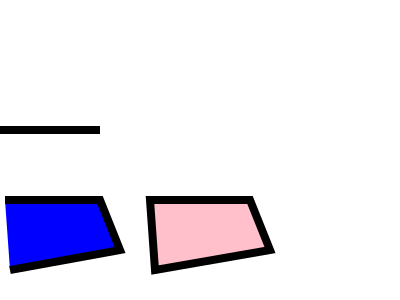
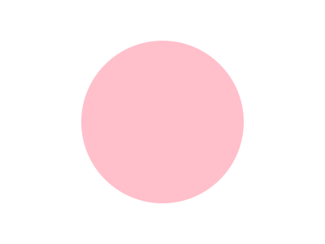
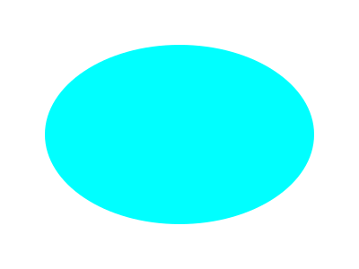
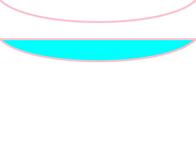
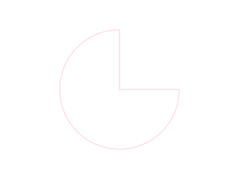

Using draw2Svg
Add Basic Drawing
New drawing can be added directly using d.draw(ADD_COMMAND_HERE), or by creating new drawing first and append it to draw instance. Each drawing has basic arguments you need to define it first, but you can always add SVG tags as extra arguments (like fill, stroke, transformation, etc)
draw.element(basic_arguments, extras)
Note on SVG Tags
Normal SVG tags use kebab-case for its name, which is forbidden in Python, instead you must rewrite it with snake_case. For example to define SVG tag stroke-width, you write as stroke_width
Note on Coordinate system
This library use standard SVG coordinate system which differs from your usual cartesian in y axis direction which is inverted. The y value increases as we go down, not up. One main reason that this library is forked from original drawSvg is coordinate issue.
Rectangle
#Rectangle initiation Arguments: x, y, width, height
d.draw(draw.Rectangle(
x=0,y=0,
width="100%",height="100%",
fill='#ddd'))
#You can make element first and append it later
box = draw.Rectangle(
x=20,y=20,
width=80,height=80,
fill='pink')
d.append(box)
d
Line, Lines and Polygon
draw.Lines(sx, sy, *points, close=False, **kwargs)
sx and sy point to line(s) origin
d = draw.Drawing(400, 300)
# Simple line
p1 = [0,130]
p2 = [100,130]
line1 = draw.Lines(*p1,*p2, stroke="black", stroke_width=8)
d.append(line1)
# The Polyline
p1 = [5,200]
p2 = [100,200]
p3 = [120,250]
p4 = [10,270]
line1 = draw.Lines(*p1,*p2,*p3,*p4, stroke="black", fill= "blue", stroke_width=8)
d.append(line1)
# The Polygon (closed Polyline)
p1 = [150,200]
p2 = [250,200]
p3 = [270,250]
p4 = [155,270]
line1 = draw.Lines(*p1,*p2,*p3,*p4, close="True", stroke="black", fill= "pink", stroke_width=8)
d.append(line1)
d

Circle
draw.Circle(cx, cy, r, **kwargs)
cx and cy point to circle's center, r refer to its radius
d = draw.Drawing(400, 300)
circle = draw.Circle(cx=200, cy=150, r=100, fill= "pink")
d.append(circle)
d

Ellipse
draw.Ellipse(cx, cy, rx, ry, **kwarg)
(cx,cy) points to the center and (rx,ry) tells its radius
d = draw.Drawing(400, 300)
ellipse = draw.Ellipse(cx=200, cy=150, rx=150, ry=100, fill= "cyan")
d.append(ellipse)
d

Path
To initiate a path, just call this one below. No need to fill any basic argument, but you can always add extras like SVG tags:
draw.Path(**kwargs)
Path datas (actually commands)
W3Schools dan MDN SVG guide has sufficient documentation on Path data
The
<path>element is used to define a path.The following commands are available for path data:
M = moveto
L = lineto
H = horizontal lineto
V = vertical lineto
C = curveto
S = smooth curveto
Q = quadratic Bézier curve
T = smooth quadratic Bézier curveto
A = elliptical Arc
Z = closepathLowercase commands mean that their movements are relative to current location
In draw2Svg, the commands are represented in form of methods. To use them here, you only need to initiate a path and call the method:
d = draw.Drawing(400, 300)
path = draw.Path(stroke= "pink", fill="None", stroke_width=4)
initPoint = [0,0]
endPoint = [400,0]
ctrlInit = [60,60]
ctrlEnd = [400-60,60]
path.M(*initPoint)
path.C(*ctrlInit, *ctrlEnd, *endPoint) # Draw a curve to (70, 20)
d.append(path)
path = draw.Path(stroke= "pink", fill="cyan", stroke_width=4)
initPoint = [0,80]
endPoint = [400,80]
ctrlInit = [60,140]
ctrlEnd = [400-60,140]
path.M(*initPoint)
path.C(*ctrlInit, *ctrlEnd, *endPoint) # Draw a curve to (70, 20)
path.Z() # Close path
d.append(path)
d

Pie Arc
draw.Pie(cx, cy, r, startDeg, endDeg, **kwargs)
(cx,cy) point to arc's center, startDeg to its initial angle and endDeg to its final angle
d = draw.Drawing(400, 300)
pie = draw.Pie(cx=200, cy=150, r=100, startDeg=0, endDeg=90, fill= "None", stroke="pink")
d.append(pie)
d
